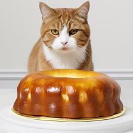
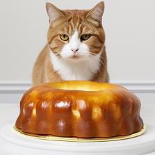

At Paws n’ Play, our journey began with a simple yet profound love for animals. Inspired by the unwavering companionship and joy they bring to our lives, we embarked on a mission to create a haven where pets and their owners alike could experience unparalleled happiness and care.
Driven by our passion for animal welfare, we hand-select each product and service with meticulous attention to quality and sustainability. From nutritious food and enriching toys to expert grooming and healthcare, every offering is carefully curated to meet the unique needs of our beloved furry friends.
But our commitment doesn't end there. We're dedicated to fostering a community that celebrates the bond between pets and their human companions. Through educational resources, compassionate support, and memorable experiences, we strive to empower pet owners to provide the best possible care for their furry family members.
At Paws n’ Play, customer satisfaction isn't just a goal – it's our guiding principle. We go above and beyond to ensure every interaction leaves tails wagging and hearts smiling.
From personalized recommendations to attentive service, we're here to make your journey with your pet as joyful and fulfilling as possible.
Join us in our mission to create a world where every pet is cherished, every need is met, and every tail wags with happiness. Welcome to Paws n’ Play, where pets are family, and love knows no bounds.
 
